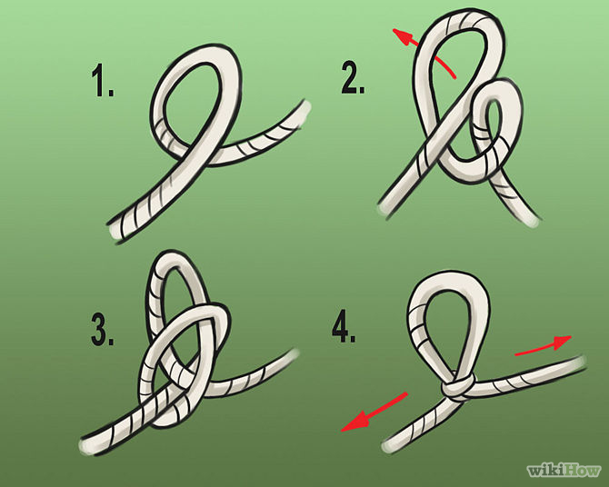
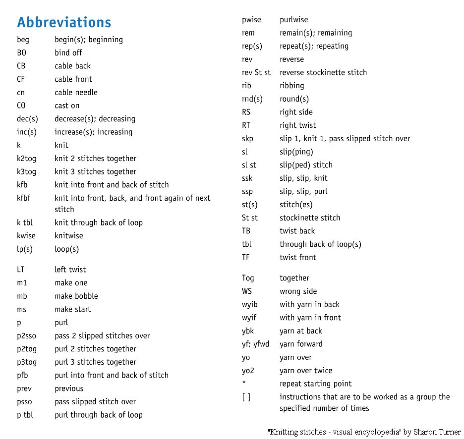

Lets Make a Scarf
An Introduction to Knitting
By Ginny Buddenberg
Virginia.Buddenberg@msj.org
Stuff You Need

Stuff You Need
- Skein of Yarn
- Knitting Needles
- Tape Measure or Ruler
- Point Protectors
- Row Counter
- Tapestry Needle
- Crochet Hook
- Scissors
Things You Need to Know

Step 1
How to Make a Slip Knot
Step 2
How to Cast On


Step 3
How to Knit
 |
 |
 |
 |
Step 4
How to Bind Off

Lets Get Started

Extras
Abbreviations
More Extras
Yarn Weights

Pick Your Project
- Lace = doilies and fine lace
- Fingering = socks
- Sport = baby items and lightweight sweaters
- Worsted = mittens/gloves/fingerless mitts, hats, scarves, and blaknets
- Aran = blankets, scarves, and warmer-weather items
- Chunky = heavy sweaters and blankets